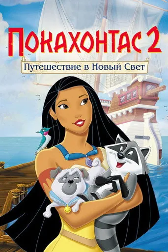

Покахонтас 2: Путешествие в Новый Свет 1998
Когда новость о смерти Джона Смита достигает Америки, дочь индейского вождя Покахонтас, вместе со своим другом, енотом Мико, отправляется в трудный путь в Лондон чтобы установить мир между двумя великими землями. Однако, правитель Рэтклифф неподалеку, он пытается захватить Джеймстаун и цена для него не имеет значения, ничто не остановит его в желании оклеветать принцессу…
Открыть в каталогеДанные и постеры принадлежат их правообладателям. Этот продукт использует TMDB API, но не одобрен и не сертифицирован TMDB.